Direct-flow burners are usually called four-angle nozzles in boiler maintenance, and their outlet airflow is direct current jet. In this kind of direct current burner, coal powder and burning air are injected into the furnace by different nozzle with non-rotating DIRECT current jet flow. According to the flow medium is different, the burner nozzle can be divided into: a, three times of tuyere tuyere, secondary tuyere, wind is used for conveying pulverized coal heating, make the coal through a duct and enters the furnace to the burner, secondary air is high temperature wind with a wind mixing pulverized coal to meet the quantity of air required for the pulverized coal combustion, three times the wind out of the coal pulverizing system with pulverized coal into the furnace exhaust to high speed to adjust the working condition of pulverized coal combustion, considering the needs of the pulverized coal ignition and burn out, different outlets with different flow velocity, this part mainly in the operation of the adjustment.
Direct-flow burners can be arranged in a variety of ways:
5.double furnace circular cutting layout, our power plant furnace with four Angle layout circular burner, its advantage is easy maintenance and maintenance of maintenance and operation regulation.
Common equipment defects of direct-flow burners in operation basically include the following situations:
1, the nozzle is blocked, especially when the cease-fire nozzle is used to adjust the load, the primary air tuyere that stops operation will form a high temperature area and coking, serious coking, will make the primary air tuyere all blocked, so that the coal air jet can not go out;
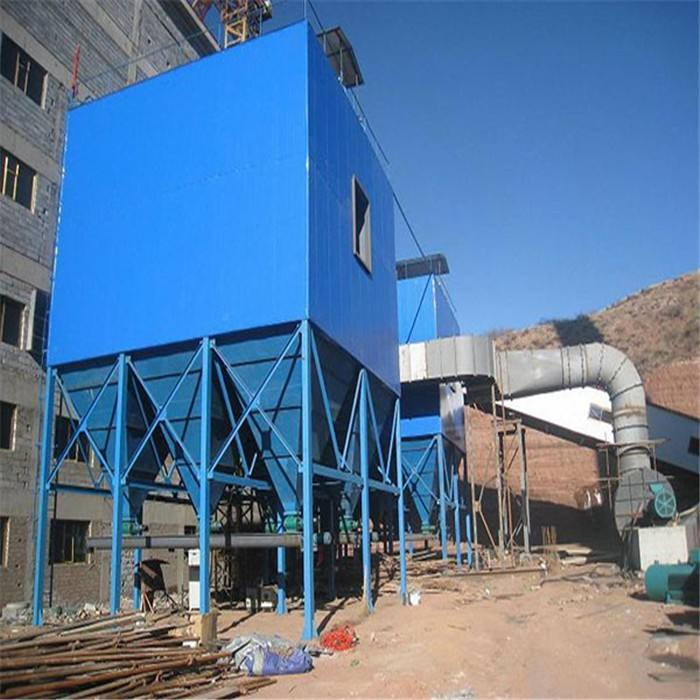
It is well known that the oil-gas burner can be used for both oil and gas. However, as the core supporting equipment of the thermal industry, the burner has inherent risk factors. Therefore, the burner must be operated in strict accordance with relevant specifications in order to minimize the risk of loss brought to customers by illegal operations.
1.Before ignition, it is necessary to confirm whether there is oil in the oil tank and whether the air is drained. Prolonged idling of the oil pump will cause oil pump wear.
2.Make sure that the return pipe is not blocked. It is strictly prohibited to install a valve in the return pipe to avoid damaging the seal of the oil pump by mistake.
3.when using a single pipe, be sure to remove the back oil of the bypass screw.
4.If the programmed control box alarm light is on, press the reset button again and wait for 20 seconds.
5.Make sure the forward and backward rotation of the fan during the initial adjustment, so as not to cause inversion of the oil pump.
6.When cleaning the oil pump, if rust is found in the pump, it indicates that water is contained in the fuel oil tank. It should be cleaned in time, otherwise the oil pump will be stuck or severely worn out.
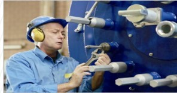
The burner operates under complex and harsh working conditions all year round, and dust and various dirt are inevitably deposited on the surface and cracks of the machine over the years. In particular, oil stains will appear in the filter screen and oil tank of the fuel burner, which will reduce the efficiency and environmental protection effect of the burner. It is our honor to have the opportunity to share with you the scientific cleaning methods of burners summarized by EBICO in its decades of thermal practice.
1. First remove the oil cup of the oil filter, remove the filter screen, and rinse with kerosene or cleaning agent.
2. Remove the outer cover of the oil pump, remove the filter screen for cleaning, remove the gear fixing screw of the oil pump, and wash the oil scale in the oil tank with cleaning agent.
3. Unscrew the nozzle, remove the strainer for cleaning, remove the internal screw of the nozzle, and reverse the inner core to flush the oil guide groove.
4. Wipe the photosensitive housing with a soft cloth, clean the oil and keep the glass housing transparent.
5. Clean the ignition electrode with soft cloth to keep the porcelain surface of the electrode free of grease and the needle part of the ignition electrode clean.
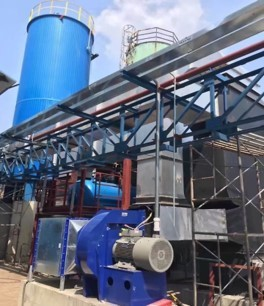
As the core equipment of thermal industry, burner has important value. In terms of economic cost, different use habits and degrees of the same burner will have an immeasurable impact on the service life of the burner. Periodic maintenance of old burners may be a more efficient and economical alternative to the large investment of new machines.
1. The light diesel must be clean. Please pay attention to clean the oil tank and oil filter regularly.
2. Under normal use, the oil nozzle should be replaced once a year, and the elastic coupling and rubber parts on the coupling should be replaced once a year and a half.
3. Foreign objects are strictly prohibited to enter the air duct.
4, the burning machine use site should be away from flammable and explosive products, and equipped with fire extinguishing equipment.
5. Adjust the oil pressure according to the oil pressure.
6. Regularly check the combustion cylinder, impeller, flame detector and ignition electrode to remove oil and carbon deposits. In particular, the flame detector should be kept clean, do not touch water.
7. Be sure to cut off the power supply when maintaining the burner.
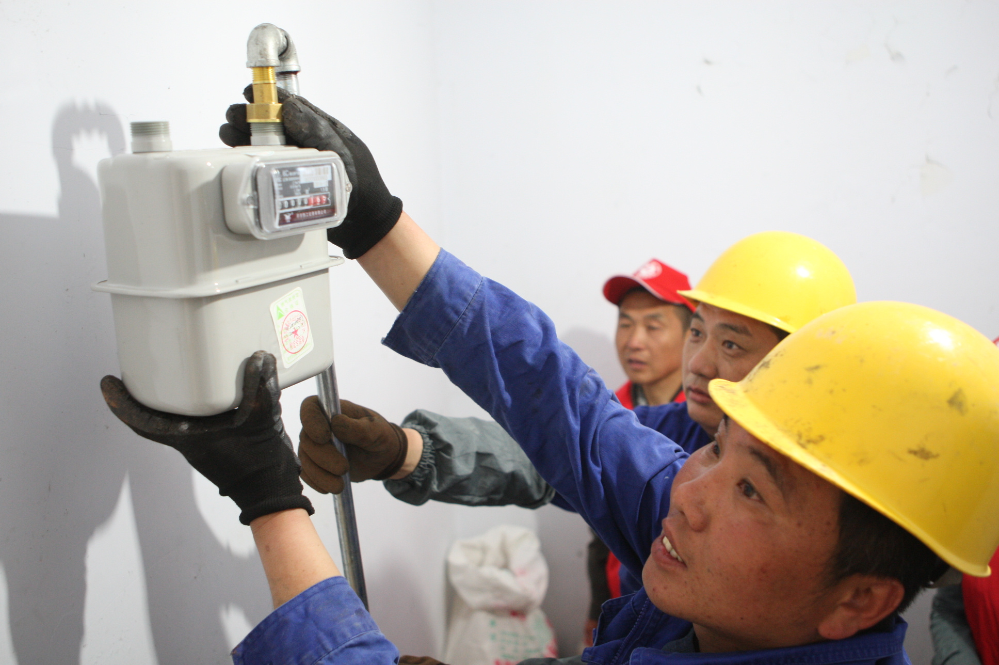
The pressure regulating valve is an important part installed between the gas source for boiler and the burner. Its function is to regulate the high pressure and unstable gas source into a small and relatively stable gas source, to provide suitable energy for the burner, and at the same time, it has the function of cut-off protection, to provide guarantee for the safe use of gas.
1.Regulating method of voltage regulator
2.Remove the interface sealing screw on the outlet side of the regulator
3.Connect the pressure detection equipment to the pressure measurement interface
4.Turn the regulator top cover counterclockwise
5.Turn the set screw clockwise to display the outlet pressure through the pressure detection device
6.When adjusting the pressure regulator, make the outlet pressure slowly adjust from small to large, and do not use too much force
7.Record the regulator outlet pressure setting
8.Refit the top of the regulator cover
9.Remove the pressure testing equipment and retighten the sealing screw
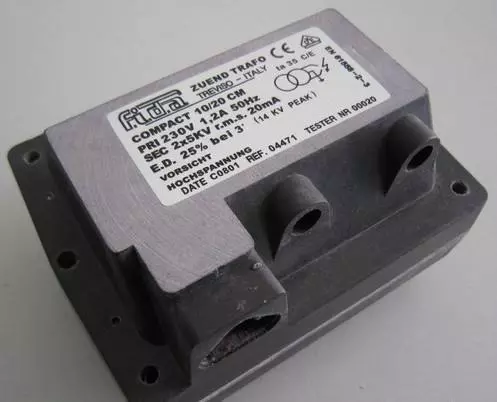
As the core component of the thermal industry, burner has a great impact on the quality of products. Operating the oil burner in the right way can reduce the maintenance cost and prolong the service life.
Connect the peripheral circuit. When the boiler temperature, pressure and automatic control are realized, please connect the wires according to the wiring diagram of the control system.
The oil suction pipe shall not be close to the bottom of the oil tank, a distance of 80-120mm shall be maintained. Before filling the oil tank, the burner shall be turned off, and the oil can only be filled into the tank after being filtered, and it can be restarted after filling for 20 minutes. The oil system shall not leak oil or gas. Check whether the fuel tank is sufficient before starting the combustion engine.
The size of the damper shall match the nozzle specification. When the burner is used, due to the inconsistency between the matched boiler and the trial boiler when the burner is delivered from the factory, it is generally necessary to adjust the damper properly, and sometimes it is necessary to replace the nozzle with proper specification and injection angle.
The ambient temperature of the burner shall not exceed 70 ℃, otherwise temperature and heat insulation measures shall be taken. When it is used in colder areas, proper insulation measures shall be taken for oil storage device and oil supply and return pipeline system to prevent oil pipeline from blocking due to freezing. At the same time, the control circuit part of the burner shall not be affected by damp or high temperature. Please turn off the burner when cleaning the chimney.
The motor shall be moisture-proof to avoid use in humid environment.
The burner should be installed in a balanced way, and should be used horizontally or vertically to avoid tilting.
When it is not convenient to operate the burner directly, the control switch and electrical protection device shall be connected externally.
Frequently check whether the connection of the burner and its components is firm, loose or not, and whether the position changes.
When the burner is started, prevent people and objects from being injured by the sudden flame
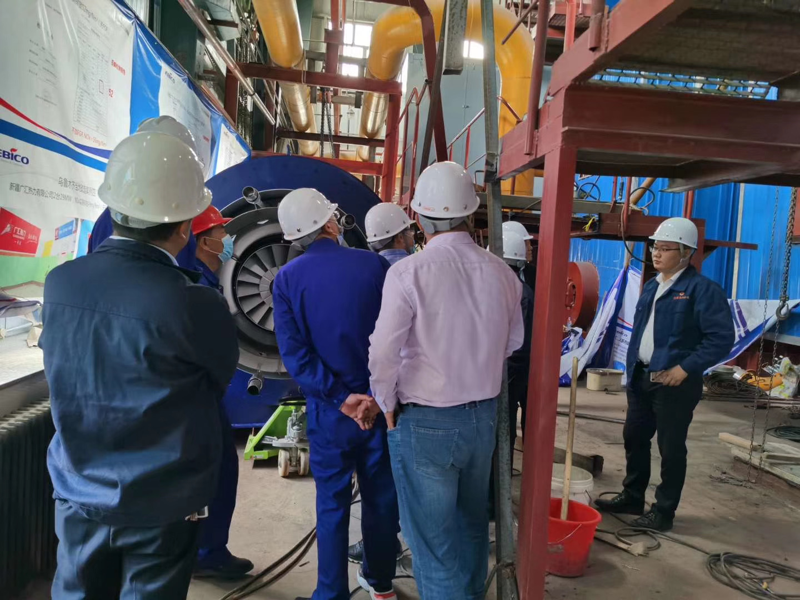
Correct using of the burner can not only prolong the service life of the burner, but also ensure the efficient and stable operation of the burner, and prevent the risk of illegal operation in the initial stage.
Turn on the power, start the burner motor, generate electric sparks between the ignition electrodes. After about 13 seconds of pre blowing, the oil pump solenoid valve opens automatically, and the oil mist emitted by the nozzle is ignited by the electric spark to form a flame. At this time, the flame detector senses the flame brightness and the controller enters the locked state.
nition electrode will delay ignition for about 5 seconds and stop ignition, and the burner will enter normal working state. If the ignition is not successful, no flame is formed, or the flame detector does not feel the flame brightness, after about 3 seconds of safety time, the safety alarm system acts, the start-up working procedure of the burner is cut off, and the red light is on.
When the burner is just started, if the flame detector has felt the brightness, the safety system will act, the controller will not enter the normal program, the solenoid valve will not open, the nozzle will not inject oil, after about 2 minutes of safety time, the fault red light will be on.
When starting the burner in the bright place, it is necessary to cover the flame detector first, and release the flame detector immediately after the burner sprays flame, otherwise the burner cannot work normally. When the red light of burner failure is on, press the reset button to restart the burner.
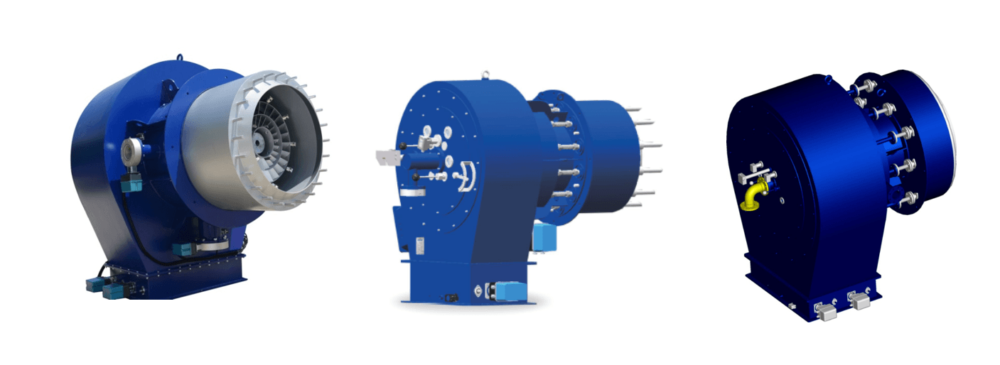
Burner is the core component in the field of thermal engineering. Before all, you must establish a certain understanding of the concept and type of burner, if you want to engage in burner related work.
According to different properties, there is a variety of classification methods of burners.
Divided by fuel mode: oil burner, gas burner, dual fuel burner
Divided by combustion control mode: single stage fire burner, double stage fire burner, proportional control burner
Divided by fuel atomization mode: mechanical atomizing burner and medium atomizing burner
Divided by structure: Monoblock burner, Split-type burner
According to the more detailed classification standard, fuel oil combustion can be further divided into light oil burner, heavy oil burner, etc.; gas burner can be further divided into natural gas burner, liquefied gas burner, biogas burner, etc.
he split burner is mainly used in industrial production. Its main features are air supply system, combustion system, fuel delivery system and intelligent control system. Each system operates independently and is installed separately. Compared with the integral burner, the split burner is more suitable for large-scale equipment, high temperature and high pressure and other special conditions.
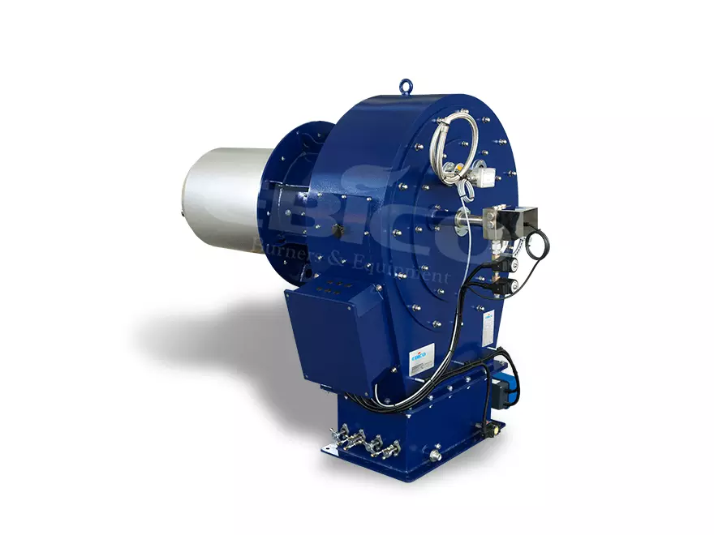
There are two basic conditions for the ignition of burners similar to that of internal combustion engines. One is well atomized fuel oil, and the other is high-pressure sparks. The former requires sufficient oil supply of the oil pump, stable injection pressure difference between the front and back of the nozzle, and fine oil mist. During ignition, the air supply should be small to prevent sparks and oil mist from blowing off; the latter requires that high-pressure sparks have enough ignition energy, the gap between the two ignition electrodes is 3-5mm, and the insulation between the two electrodes is good, so the sparks can smoothly skip the gap between the electrodes to ignite the diesel oil mist.
The common reason for the burner is not on fire is that there is no ignition high pressure. The first reason is that the ignition transformer is not energized (it may be that the relay in the power supply line or controller is in poor contact); the second one is that the insulation between the two thermal power poles is poor due to carbon deposition, and the high voltage is leaked, so there is no discharge spark. The distance between the ignition electrodes should be about 3mm, the distance between the ignition electrodes and the front end face of the nozzle should be about 5-7mm, and the insulation between the two electrodes must be good.
The possible causes include the blockage of the oil supply pipeline, the failure of the oil pump, and the leakage of the oil supply pipeline. Remove the high-pressure oil outlet pipe to check the pump oil condition. Normally, the oil column should be ejected outwards.
Another reason for the injector failure is that the fuel cut-off solenoid is not energized. When the oil cut-off solenoid valve loses power, even if the oil pump operates normally, the high-pressure end will not supply oil to the fuel injection nozzle. Only after the controller energizes the oil cut-off solenoid valve, can the diesel be ejected. The purpose is to prevent the original diesel stored in the furnace from deflagration in case of open fire. Under normal circumstances, the burner will conduct pre blowing before ignition, blow out the residual diesel in the combustion chamber, and then spray oil for ignition. In the pre blow stage, although the oil pump motor is running, the oil cut-off solenoid valve is not energized, and the high-pressure diesel oil pumped by the oil pump is cut off by the oil cut-off solenoid valve and cannot reach the fuel injection nozzle.
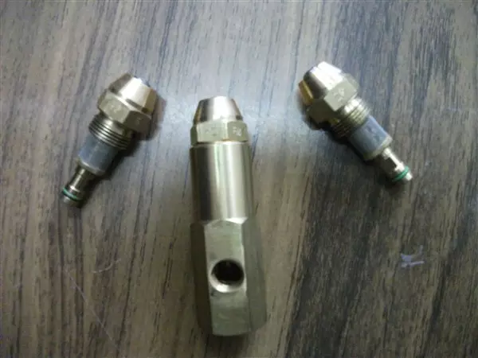
This is generally caused by insufficient fuel supply. If the diesel oil supply is not timely when the burner is working, it will inevitably lead to fire-fighting after oil cut-off. After the fire is extinguished, the flame sensor is in a high impedance state. The controller orders to stop the fuel injection and pre blow for about 10s, and then start the fuel injection. If the burner can be set up and reignited. If the diesel still cannot be supplied after the start of injection and the normal ignition cannot be achieved, the controller will automatically take measures to stop the injection and ignition after a delay of about 10s, and the air supply motor will also stop working and the red warning light will be on. After waiting for 1-2min, the thermal delay is over, and the red light can be reset manually to start the next ignition process automatically.
When the fuel oil supply is insufficient, the sound of "wheezing and wheezing" is often accompanied by the flame. At this time, the liquid in the oil supply pipeline may be accompanied by bubbles, which makes the injection pressure unstable and combustion unstable. In addition, when there is air bubble in the oil pipe, the running resistance of the oil pump will increase or decrease with it. When the fire is unstable, there is often black smoke.Because, the oil pressure can not be established when the oil supply is insufficient, so that the diesel fuel can not be completely combusted due to poor atomization.
The common causes of unstable fire are as follows:
When the oil pipe leaks, the external air will enter the oil pipe to form bubbles;
The oil pipe is narrow, blocked and compressed, which makes the oil path blocked and the diesel supply insufficient;
The filter screen of the oil supply system (including the inlet filter screen of the oil suction pipe, diesel filter element, oil pump filter screen, etc.) is blocked.
In winter, the oil supply system is often blocked, because of the poor fluidity of diesel oil when the temperature is low, it is easy to precipitate wax, which blocks the pipeline, diesel filter element, oil pump filter screen, nozzle filter screen, etc., making the oil supply system not smooth, causing unstable fire or fire fighting. If the temperature in the workshop is low, the oil supply pipeline can be heated with a baking lamp, especially the oil pump, filter element and other parts. When ignition is difficult, the air inlet can be baked to preheat the air inlet.
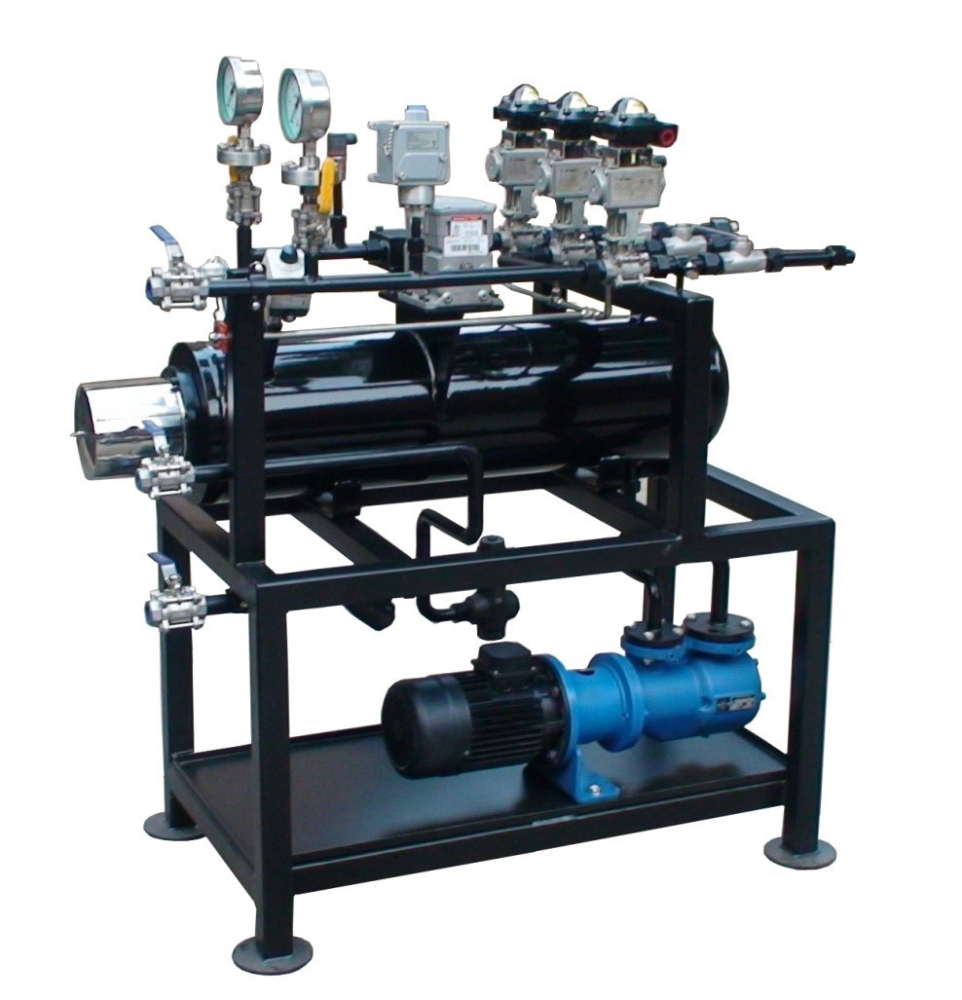
The diesel injected into the burner is mixed and burned at the same time. When the air supply is appropriate, the atomized CO2 and steam exhaust are colorless. When the air supply is insufficient, it will cause the incomplete combustion of diesel oil to generate CO and carbon particles, which will lead to black smoke. However, if the intake air volume is too large and strong, the oil mist that is too late to burn may be blown away, forming a white smoke discharge.
The common reason for black smoke is that the opening of combustion air inlet valve is too small, and the common reason for white smoke is that the opening of air inlet valve is too large. In both cases, the air inlet valve should be readjusted. When adjusting, you can observe the exhaust smoke color and adjust the opening of the damper until the exhaust smoke color is close to colorless.
Another reason for the black smoke is the poor atomization of diesel oil, which contains large droplets and cannot be fully mixed with air, resulting in black smoke due to incomplete local combustion.
The causes of poor diesel atomization are as follows:
The atomization capacity of the nozzle decreases seriously due to aging or clogging;
The oil pump outlet pressure is too high or too low.
The atomization effect is poor due to the low oil pressure of the nozzle caused by low pressure of the oil pump. But if the pressure of the oil pump is too high, the injection pressure will also be low. Because, the oil delivery volume of the oil pump is inversely proportional to the oil delivery pressure. If the oil pressure is too high, the oil delivery volume must be reduced. Because, the orifice of the nozzle is constant, the pressure difference between the two ends of the nozzle will be reduced, resulting in black smoke. This is due to the poor atomization of the oil supply. The oil outlet pressure of the oil pump can be adjusted according to the exhaust smoke color. Turn the pressure regulating screw clockwise to increase the oil output and decrease it; otherwise, the oil output will increase when the pressure drops.
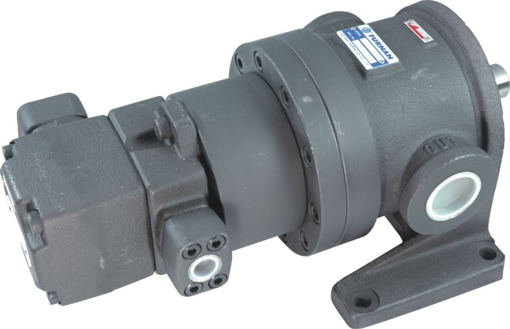